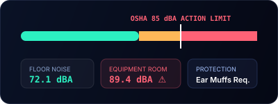

Capture repeatable workplace noise checks for offices, stores, factories, and quiet spaces.
Lightweight workplace inspection records with A/C/Z weighting, Fast/Slow response, LAeq, Ln statistics, calibration context, photos, recordings, and PDF/CSV exports.

Operational checks
Use consistent locations and notes to compare equipment rooms, open offices, stores, schools, clinics, hotels, and factory boundaries.

Evidence context
Reports keep weighting, time response, calibration offset, device environment, estimated error, and disclaimer text.

Export workflow
Use CSV for trend review, PDF for communication, and media files for contextual evidence.

Three good habits
- Document the same point repeatedly.
- Keep calibration notes visible.
- Separate routine comfort checks from formal occupational assessments.

Occupational standard boundary
SOUNDTEST.PRO is not a certified sound level meter. Occupational, regulatory, or legal assessments require qualified equipment and procedures.
Frequently asked questions
What decibel level requires hearing protection at work?
Most occupational safety standards require hearing protection at 85 dB averaged over an 8-hour shift (TWA), with action levels starting at 80 dB TWA. Short peaks above 100 to 115 dB require double protection. SOUNDTEST.PRO shows LAeq and peak readings, which are useful as supporting documentation, but formal workplace noise assessments should be performed with calibrated equipment by a qualified professional.
Who enforces occupational noise rules?
Enforcement varies by country. In the United States, OSHA sets and enforces workplace noise limits for general industry and construction. In the European Union, the Noise Directive (2003/10/EC) sets exposure limits and required protective measures. Many other countries have equivalent agencies. If you suspect unsafe noise at work, document it, then report to your safety officer or the relevant agency.
Can I record noise levels at my workplace?
Personal documentation is generally allowed in common work areas where you have a reasonable expectation of recording, but policies vary by employer and jurisdiction. Treat your records as supporting documentation, not a substitute for an employer-conducted noise assessment. SOUNDTEST.PRO records are documentation-grade estimates, not certified measurements.
What is TWA vs peak in workplace noise measurement?
TWA, or Time-Weighted Average, is the average noise exposure over a working day, normalized to 8 hours; OSHA's action level is 80 dB TWA and the permissible limit is 90 dB TWA. Peak refers to instantaneous maximum sound pressure, with limits around 115 dB (140 dB for impact noise). Both matter; sustained exposure and sudden peaks can each cause hearing damage.
SOUNDTEST.PRO is a documentation-grade estimate tool, not a certified sound level meter. Verify any formal claim with calibrated equipment and qualified measurement procedures.